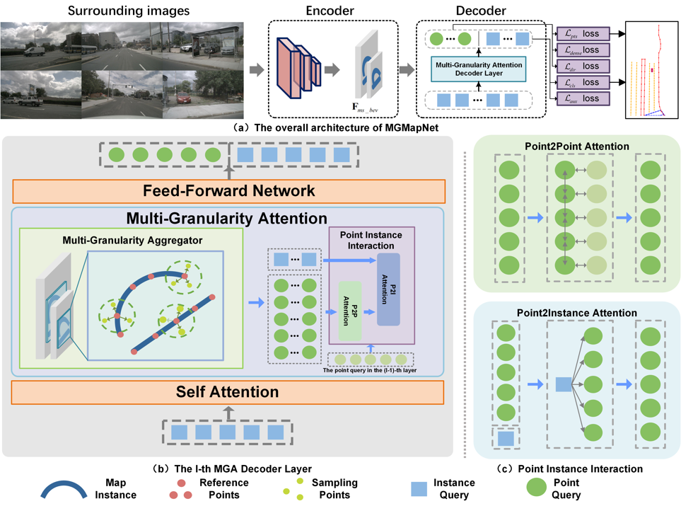
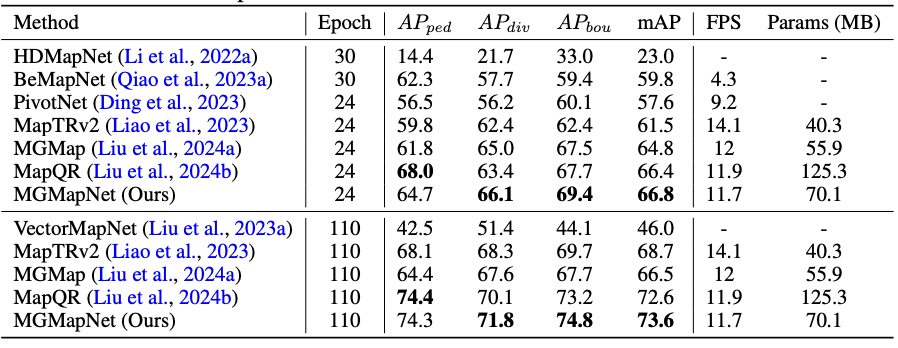
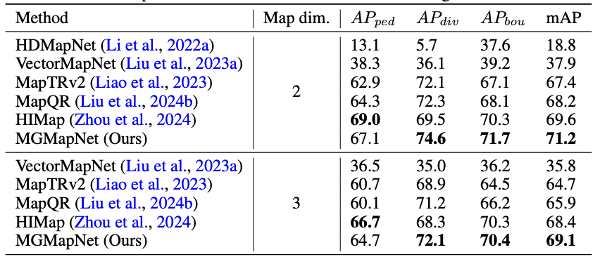
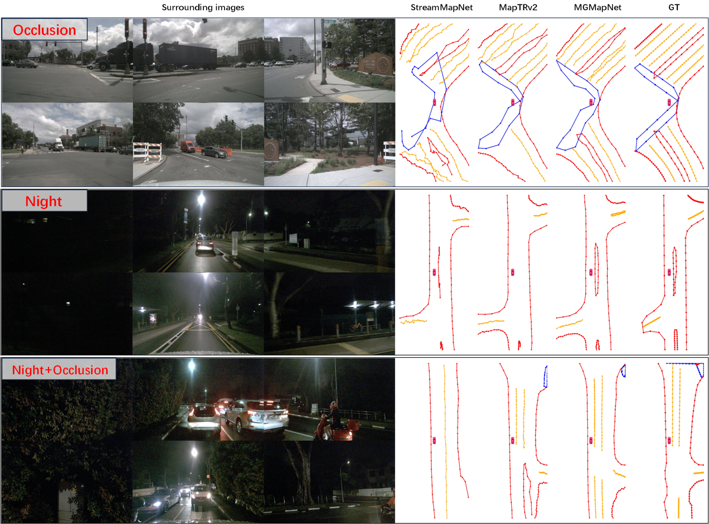
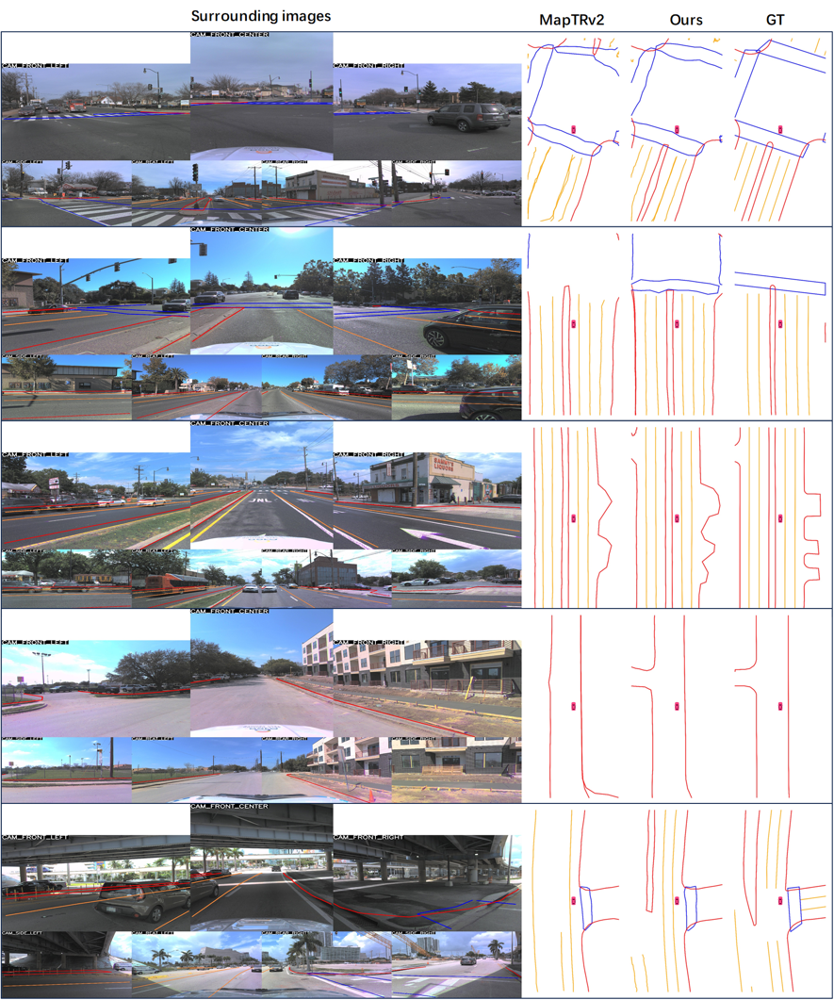

MGMapNet: Multi-Granularity Representation Learning for End-to-End Vectorized HD Map Construction
Jing Yang, Minyue Jiang, Sen Yang, Xiao Tan, Yingying Li, Errui Ding, Jingdong Wang, Hanli Wang
Overview:
The construction of vectorized high-definition map typically requires capturing both category and geometry information of map elements. Current state-of-theart methods often adopt solely either point-level or instance-level representation, overlooking the strong intrinsic relationship between points and instances. In this work, we propose a simple yet efficient framework named MGMapNet (multigranularity map network) to model map elements with multi-granularity representation, integrating both coarse-grained instance-level and fine-grained point-level queries. Specifically, these two granularities of queries are generated from the multi-scale bird’s eye view (BEV) features using a proposed multi-granularity aggregator. In this module, instance-level query aggregates features over the entire scope covered by an instance, and the point-level query aggregates features locally. Furthermore, a point-instance interaction module is designed to perform information exchange between instance-level and point-level queries.
Method:
The overall architecture of MGMapNet is depicted in Fig. 1 (a). MGMapNet comprises a BEV feature encoder which is responsible to extract multi-scale BEV features from perspective view images, and a Transformer Decoder which stacks multiple layers of multi-granularity attention (MGA) to generate predictions for map elements. The prediction from each layer encapsulates both category and geometry information within the perception range. Figure 1 (b) illustrates the l-th MGA decoder layer, which is composed of self attention, MGA, and feed-forward network. The MGA consists of two components: multi-granularity aggregator and point-instance interaction. The instance-level query is initialized using learnable parameters and updated through interaction with BEV features, while the point query is dynamically generated by aggregating BEV features. As shown in Fig. 1 (c), the point-instance interaction facilitates the mutual interaction among local geometric information, global category information, and the point queries from the (l-1)-th layer.

Fig. 1. Overview of the proposed MGMapNet.
Result:
The proposed MGMapNet is compared with several state-of-the-art methods with the experimental results shown in Table 1 and Table 2. Qualitative experiments are conducted to verify the effectiveness of the proposed MGMapNet, as illustrated in Fig. 2 and Fig. 3. Across three challenging scenarios—daytime with occluded vehicles, nighttime under low-light conditions, and low-light environments with occlusion, MGMapNet demonstrates robust performance in accurately identifying key elements.
Table 1. Comparison to the state-of-the-art methods on nuScenes val set.

Table 2. Comparison to the state-of-the-art methods on Argoverse2 val set.


Fig. 2. Qualitative visualization on nuScenes val set.

Fig. 3. Qualitative visualization on Argoverse2 val set.
Source Code:
原站插图：图片暂留白MGMapNet1.0.zip
Citation:
Please cite the following paper if you find this work useful:
Jing Yang, Minyue Jiang, Sen Yang, Xiao Tan, Yingying Li, Errui Ding, Jingdong Wang, and Hanli Wang, MGMapNet: Multi-granularity Representation Learning for End-to-end Vectorized HD Map Construction, The Thirteenth International Conference on Learning Representations (ICLR’25), Singapore, accepted, Apr. 24 - 28, 2025.